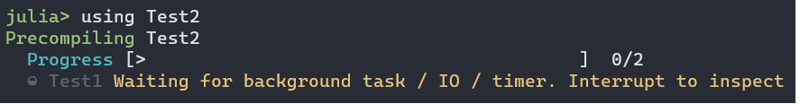

Fixing precompilation hangs due to open tasks or IO
On Julia 1.10 or higher, you might see the following message:

This may repeat. If it continues to repeat with no hints that it will resolve itself, you may have a "precompilation hang" that requires fixing. Even if it's transient, you might prefer to resolve it so that users will not be bothered by this warning. This page walks you through how to analyze and fix such issues.
If you follow the advice and hit Ctrl-C, you might see
^C Interrupted: Exiting precompilation...
1 dependency had warnings during precompilation:
┌ Test1 [ac89d554-e2ba-40bc-bc5c-de68b658c982]
│ [pid 2745] waiting for IO to finish:
│ Handle type uv_handle_t->data
│ timer 0x55580decd1e0->0x7f94c3a4c340This message conveys two key pieces of information:
- the hang is occurring during precompilation of
Test1, a dependency ofTest2(the package we were trying to load withusing Test2) - during precompilation of
Test1, Julia created aTimerobject (use?Timerif you're unfamiliar with Timers) which is still open; until that closes, the process is hung
If this is enough of a hint for you to figure out how timer = Timer(args...) is being created, one good solution is to add wait(timer) if timer eventually finishes on its own, or close(timer) if you need to force-close it, before the final end of the module.
However, there are cases that may not be that straightforward. Usually the best option is to start by determining whether the hang is due to code in Test1 or whether it is due to one of Test1's dependencies:
- Option 1:
Pkg.add("Aqua")and useAqua.test_persistent_tasks. This should help you identify which package is causing the problem, after which the instructions below should be followed. If needed, you can create aPkgIdasBase.PkgId(UUID("..."), "Test1"), where...comes from theuuidentry inTest1/Project.toml. - Option 2: manually diagnose the source of the hang.
To manually diagnose:
Pkg.develop("Test1")- Comment out all the code
included or defined inTest1, except theusing/importstatements. - Try
using Test2(or evenusing Test1assuming that hangs too) again
Now we arrive at a fork in the road: either
- the hang persists, indicating it is due to one of your dependencies
- the hang disappears, indicating that it is due to something in your code.
Diagnosing and fixing hangs due to a package dependency
Use a binary search to identify the problematic dependency: start by commenting out half your dependencies, then when you isolate which half is responsible comment out half of that half, etc. (You don't have to remove them from the project, just comment out the using/import statements.)
Once you've identified a suspect (here we'll call it ThePackageYouThinkIsCausingTheProblem), first try precompiling that package. If it also hangs during precompilation, continue chasing the problem backwards.
However, most likely ThePackageYouThinkIsCausingTheProblem will precompile fine. This suggests it's in the function ThePackageYouThinkIsCausingTheProblem.__init__, which does not run during precompilation of ThePackageYouThinkIsCausingTheProblem but does in any package that loads ThePackageYouThinkIsCausingTheProblem. To test this theory, set up a minimal working example (MWE), something like
(@v1.10) pkg> generate MWE
Generating project MWE:
MWE\Project.toml
MWE\src\MWE.jlwhere the source code of MWE.jl is
module MWE
using ThePackageYouThinkIsCausingTheProblem
endand you've added ThePackageYouThinkIsCausingTheProblem to MWE's dependencies.
If that MWE reproduces the hang, you've found your culprit: ThePackageYouThinkIsCausingTheProblem.__init__ must be creating the Timer object. If the timer object can be safely closed, that's a good option. Otherwise, the most common solution is to avoid creating the timer while any package is being precompiled: add
ccall(:jl_generating_output, Cint, ()) == 1 && return nothingas the first line of ThePackageYouThinkIsCausingTheProblem.__init__, and it will avoid doing any initialization in any Julia process whose purpose is to precompile packages.
Fixing package code to avoid hangs
Search your package for suggestive words (here like "Timer") and see if you can identify where the problem is being created. Note that a method definition like
maketimer() = Timer(timer -> println("hi"), 0; interval=1)is not problematic in and of itself: it can cause this problem only if maketimer gets called while the module is being defined. This might be happening from a top-level statement such as
const GLOBAL_TIMER = maketimer()or it might conceivably occur in a precompile workload.
If you struggle to identify the causative lines, then consider doing a binary search: comment out sections of your package (or include lines to omit entire files) until you've reduced the problem in scope.